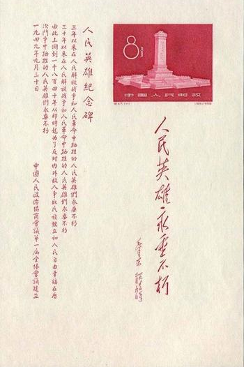
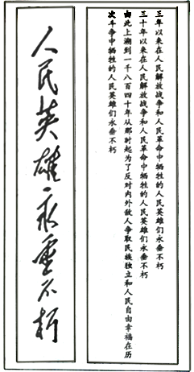

2018年北京市中考语文试题 · 基础选择题 第2、3、4、5题
学校在圆明园举行“牢记历史，缅怀先烈”主题活动。请根据要求，完成1－5题。
2．下面是圆明园中“武陵春色遗址”景观说明牌上的文字。阅读这段文字，完成（1)（2）题。（共2分）
武陵春色，圆明园四十景之一，建自康熙朝后叶，是一处摹自陶渊明《桃花源记》艺术意境的园中园。该景园林植物号称山桃万株，东南部以 ① 石为胜，可乘舟沿清溪而上，穿越桃花洞，进入“ ② ”。该景群四周环山，山外东临巨池，余皆清溪环绕。园林主体部分南北长220米，东西宽105米，占地2.5万平方米，建筑面积2000平方米。
（1）给加点的字注音和对画线字笔顺作出判断，全都正确的一项是（1分）
A. 摹（mú） “巨”字的笔顺是：
B．摹（mú） “巨”字的笔顺是：
C．摹（mò） “巨”字的笔顺是：
D．摹（mò） “巨”字的笔顺是：
（2）结合语境，在这段文字横线处填入的汉字和词语，全都正确确的一项是（1分）
A．①叠 ②世外桃源 B．①迭 ②洞天胜境
C．①迭 ②世外桃源 D．①叠 ②洞天胜境
3． 在圆明园大水法遗址前，学生会主席准备给同学们讲述圆明园被英法联军毁灭的历史。阅读他的发言稿，完成（1）（2）题。（共4分）
第二次鸦片战争期间，英法联军攻入北京，闯进圆明园。他们被园内琳琅满的珍宝震惊了，争先恐后，大肆抢夺。园内能拿走的东西，他们统统掠走【甲】实在运不走的，他们就疯狂打砸。据粗略统计，被掠夺的文物【乙】上至先秦下至清朝的各种奇珍异宝有100多万件。为了销毁罪证，侵略者纵火焚烧圆明园。大火烧了三天三夜，往日辉煌的宫殿、参天的古树，都化为灰。就这样，英法联军连抢带砸，使圆明园遭受了毁灭性的破。
（1）在【甲】【乙】两处分别填入标点符号，最恰当的一项是（2分）。
A.【甲】分号 【乙】冒号 B．【甲】分号 【乙】破折号
C．【甲】逗号 【乙】冒号 D．【甲】逗号 【乙】破折号
4. 同学们看到了陈列在圆明园展览馆里的“雨果的一封信”。下面是这封信中的部分内容，请你阅读这段文字，完成（1）（2）题。（共4分）
在世界的某个角落，有一个世界奇迹。这个奇迹叫圆明园。
……
这个奇迹已经消失了。
有一天，两个强盗闯进了圆明园。一个强盗洗劫，另一个强盗放火。似乎得胜之后，便可以动手行窃了。他们对圆明园进行了大规模的劫掠，赃物由两个胜利者均分。……我们们所有大教堂的财宝加在一起，也许还抵不上东方这座了不起的富丽堂皇的博物馆。那儿不仅仅有艺术珍品，还有大堆的金银制品。丰功伟绩！收获巨大！两个胜利者，一个塞满了腰包，这是看得见的，另一个装满了箱箧。他们手挽手，笑嘻嘻地回到了欧洲。这就是这两个强盗的故事。
（2）看过这封信，同学们纷纷在微信群里发表感想。下面是四位同学分别写下的感受，其中修辞方法或词语使用不恰当的一项是（2分）
A．烧名园，掠珍宝，恬不知耻两强盗；作书信，斥罪行，仗义执言一作家。
B．面对焚烧圆明园的卑劣行径，雨果没有一点奴颜媚骨，表现了凛然正气。
C．读过雨果的这封信，我们仿佛仍能感受到圆明园在哭泣，在流血，在控诉。
D．圆明园遗址是侵略者给我们留下的课堂，它让我们永远铭记历史，勿忘国耻
5． 当活动进行到“缅怀先烈”的环节时，校团委书记拿出了一枚珍藏的《人民英雄纪念碑》小全张①，与同学们共同缅怀自鸦片战争以来为民族解放而牺牲的先烈。下面对小全张中的的题词和碑文的理解，都正确的一项是（2分）


《人民英雄纪念碑》小全张
小全张中的题词（左）和碑文（右）
A．题词的字体属于楷书，端正典雅；碑文内容由远及近，缅怀了自1840年以来各个历史阶段牺牲的人民英雄，表达了对他们的敬仰之情。
B．题词具有行书的特点，刚劲有力；碑文内容由远及近，缅怀了自1840年以来各个历史阶段牺牲的人民英雄，表达了对他们的敬仰之情。
C．题词的字体属于楷书，端正典雅；碑文内容由近及远，细怀了自1840年以来各个历史阶段牺牲的人民英雄，表达了对他们的敬仰之情。
D．题词具有行书的特点，刚劲有力；碑文内容由近及远，细怀了自1840年以来各个历史阶段牺牲的人民英雄雄，表达了对他们的敬仰之情。
注：①［ 《人民英雄纪念碑》小全张］为纪念人民英雄纪念碑建成而发行的小全张。小全张右上方主图是人民英雄纪念碑的正面全景，主图下是镌刻在纪念碑正面的毛泽东的题词，左面是刻在纪念碑背面的由周恩来书写的碑文。